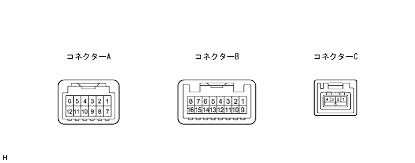

HDD Navigation System Terminals of ECU |
| Terminal No. (Terminal Symbol) | Input/Output | Item | Measurement Condition | Specified Condition | Trouble symptom if out of standard O: When open circuit S: When shorted to body |
|---|---|---|---|---|---|
| A1(FR+) ←→ A7(E) | Output | Waveform | Voice output in progress | A waveform synchronized with the sound is output | No sound from speaker assembly NO.1 (RH) and speaker assembly FR NO.2 (RH) |
| A2(FL+) ←→ A7(E) | Output | Waveform | Voice output in progress | A waveform synchronized with the sound is output | No sound from speaker assembly NO.1 (LH) and speaker assembly FR NO.2 (LH) |
| A3(ACC) ←→ A7(E) | Input | Voltage | ACC ON | 11 to 14 V | O: System does not operate S: Fuse blown |
| A4(B) ←→ A7(E) | Input | Voltage | IG OFF | 11 to 14 V | O: System does not operate S: Fuse blown |
| A5(FR-) ←→ A7(E) | Output | Waveform | Voice output in progress | A waveform synchronized with the sound is output | No sound from speaker assembly NO.1 (RH) and speaker assembly FR NO.2 (RH) |
| A6(FL-) ←→ A7(E) | Output | Waveform | Voice output in progress | A waveform synchronized with the sound is output | No sound from speaker assembly NO.1 (LH) and speaker assembly FR NO.2 (LH) |
| A7 (E) ←→ Body ground | - | Resistance | Always | Below 1 Ω | O: Slight increase in noise |
| A8(ANT) ←→ A7(E) | Output | Voltage | Receiving radio (AM/FM) | 11 to 14 V | Poor AM/FM reception sensitivity |
| A10(ILL+) ←→ A7(E) | Input | Voltage | Headlight dimmer switch TAIL | 11 to 14 V | O: Does not switch to night screen S: Fuse blown |
| Terminal No. (Terminal Symbol) | Input/Output | Item | Measurement Condition | Specified Condition | Trouble symptom if out of standard O: When open circuit S: When shorted to body |
|---|---|---|---|---|---|
| B1(RR+) ←→ A7(E) | Output | Waveform | Voice output in progress | A waveform synchronized with the sound is output | No sound from speaker assembly RR (RH) |
| B2(RL+) ←→ A7(E) | Output | Waveform | Voice output in progress | A waveform synchronized with the sound is output | No sound from speaker assembly RR (LH) |
| B3(RR-) ←→ A7(E) | Output | Waveform | Voice output in progress | A waveform synchronized with the sound is output | No sound from speaker assembly RR (RH) |
| B6(RL-) ←→ A7(E) | Output | Waveform | Voice output in progress | A waveform synchronized with the sound is output | No sound from speaker assembly RR (LH) |
| Terminal No. (Terminal Symbol) | Input/Output | Item | Measurement Condition | Specified Condition | Trouble symptom if out of standard O: When open circuit S: When shorted to body |
|---|---|---|---|---|---|
| C2(CDR+) ←→ A7(E) | Input | Waveform | Device connected to USB terminal of stereo jack adapter assembly NO.1 and playing | A waveform synchronized with the sound output from the device connected to the USB terminal is output | Right sound of device connected to USB terminal is low or not output |
| C3(CDR-) ←→ A7(E) | Input | Waveform | Device connected to USB terminal of stereo jack adapter assembly NO.1 and playing | A waveform synchronized with the sound output from the device connected to the USB terminal is output | Right sound of device connected to USB terminal is low or not output |
| C4(CDL+) ←→ A7(E) | Input | Waveform | Device connected to USB terminal of stereo jack adapter assembly NO.1 and playing | A waveform synchronized with the sound output from the device connected to the USB terminal is output | Left sound of device connected to USB terminal is low or not output |
| C5(CDL-) ←→ A7(E) | Input | Waveform | Device connected to USB terminal of stereo jack adapter assembly NO.1 and playing | A waveform synchronized with the sound output from the device connected to the USB terminal is output | Left sound of device connected to USB terminal is low or not output |
| C6(MUTE) ←→ A7(E) | Input | Voltage |
| 3.5 V or higher → 1 V or less | O Pop noise occurs S: No sound from speakers |
| C7 (GND) ←→ Body ground | - | Resistance | Always | Below 1 Ω | O: Device connected to USB terminal does not operate |
| C9(TXM+) | Input/Output | - | Service Inspection | - | O: Device connected to USB terminal does not operate S: System does not operate |
| C10(TXM-) | Input/Output | - | Service Inspection | - | O: Device connected to USB terminal does not operate S: System does not operate |
| C11(ACC) ←→ A7(E) | Output | Voltage | ACC ON | 11 to 14 V | O: Device connected to USB terminal does not operate S: Fuse blown |
| C12(+B) ←→ A7(E) | Output | Voltage | IG OFF | 11 to 14 V | O: Device connected to USB terminal does not operate S: Fuse blown |
| Terminal No. (Terminal Symbol) | Input/Output | Item | Measurement Condition | Specified Condition | Trouble symptom if out of standard O: When open circuit S: When shorted to body |
|---|---|---|---|---|---|
| D3 (SNS2) ←→ Body ground | - | Resistance | Always | Below 1 Ω |
|
| D4(MIC+) ←→D13(MIC-) | Input | Waveform | During voice input | A waveform synchronized with the sound is output |
|
| D5 (MACC) ←→ Body ground | Output | Voltage | ACC ON | 4 to 6 V |
|
| D6(SWG) ←→ A7(E) | - | Resistance | Always | Below 1 Ω |
|
| D7(SW1) ←→ A7(E) | Input | Voltage | No switch pressed → VOL- switch pressed → VOL+ switch pressed → SEEK- switch pressed → SEEK+ switch pressed | 2.7 V or higher → Approx. 2.3 V → Approx. 1.6 V → Approx. 1.0 V → 0.8 V or less | SEEK operation and volume adjustment cannot be performed with steering pad switch |
| D8(SW2) ←→ A7(E) | Input | Voltage | No switch pressed → voice recognition switch pressed → off-hook switch pressed → on-hook switch pressed → MODE switch pressed | 2.7 V or higher → Approx. 2.3 V → Approx. 1.6 V → Approx. 1.0 V → 0.8 V or less | Voice recognition, on-hook, off-hook and MODE operations cannot be performed with steering pad switch |
| D9(TX+) | Input/Output | - | Service Inspection | - | O: ETC cannot be operated on display, interrupt display not shown S: System does not operate |
| D10(TX-) | Input/Output | - | Service Inspection | - | O: ETC cannot be operated on display, interrupt display not shown S: System does not operate |
| D13 (MIC-) ←→ Body ground | - | Resistance | Always | Below 1 Ω |
|
| D14 (SGND) ←→ Body ground | - | Resistance | Always | Below 1 Ω |
|
| D19(CANH) | Input/Output | - | - | - | Refer to CAN communication system - fail-safe chart (*1) |
| D20(CANL) | Input/Output | - | - | - | Refer to CAN communication system - fail-safe chart (*1) |
 Reference
Reference| Terminal No. (Terminal Symbol) | Input/Output | Item | Measurement Condition | Specified Condition | Trouble symptom if out of standard O: When open circuit S: When shorted to body |
|---|---|---|---|---|---|
| F1(PKB) ←→ A7(E) | Input | Voltage | Apply the parking brake | 1 V or less | O: All switches can be operated while driving |
| F2(IG) ←→ A7(E) | Input | Voltage | IG ON | 11 to 14 V | O: System does not operate S: Fuse blown |
| F3(SPD) ←→ A7(E) | Input | Waveform | Turn wheel by hand | Waveform 1 | All switches can be operated while driving |
| F5(REV) ←→ A7(E) | Input | Voltage | Shift lever in R | 11 to 14 V | O: Does not switch to back guide monitor screen when shift lever is in R S: Fuse blown |
| Terminal No. (Terminal Symbol) | Input/Output | Item | Measurement Condition | Standard | Trouble symptom if out of standard O: When open circuit S: When shorted to body |
|---|---|---|---|---|---|
| K1(AGND) ←→ A7(E) | - | Resistance | Always | Below 1 Ω | O: Normal (slight increase in noise in sound of device connected to AUX terminal) |
| K3(VAR+) ←→ A7(E) | Input | Waveform | Device connected to AUX terminal of stereo jack adapter assembly NO.1 and playing | A waveform synchronized with the sound is output | No sound from device connected to AUX terminal |
| K4(VAL+) ←→ A7(E) | Input | Waveform | Device connected to AUX terminal of stereo jack adapter assembly NO.1 and playing | A waveform synchronized with the sound is output | No sound from device connected to AUX terminal |
| K7(VA-) ←→ A7(E) | - | Resistance | Always | Below 1 Ω | No sound from device connected to AUX terminal |
| K8(ADPG) ←→ A7(E) | - | Voltage | Device not connected to AUX terminal of stereo jack adapter assembly NO.1 → connected | 2.1 to 3 V → Below 1 V | Does not switch to AUX |
 |
Waveform 1
| Item | Description |
|---|---|
| Terminal No. (Terminal Symbol) | F3(SPD) ←→ A7(E) |
| Tool Setting | 5 V/DIV、20 mS/DIV |
| Measurement Condition | Turn wheel by hand |

| Terminal No. (Terminal Symbol) | Input/Output | Item | Measurement Condition | Specified Condition | Trouble symptom if out of standard O: When open circuit S: When shorted to body |
|---|---|---|---|---|---|
| A1 (USD1) ←→ Body ground | - | Resistance | Always | Below 1 Ω | Normal (slight increase in noise in sound of device connected to USB terminal) |
| A2(URO+) ←→ A7(GND) | Output | Waveform | Device connected to USB terminal of stereo jack adapter assembly NO.1 and playing | A waveform synchronized with the sound output from the device connected to the USB terminal is output | Right sound of device connected to USB terminal is low or not output |
| A3(URO-) ←→ A7(GND) | Output | Waveform | Device connected to USB terminal of stereo jack adapter assembly NO.1 and playing | A waveform synchronized with the sound output from the device connected to the USB terminal is output | Right sound of device connected to USB terminal is low or not output |
| A4(ULO+) ←→ A7(GND) | Output | Waveform | Device connected to USB terminal of stereo jack adapter assembly NO.1 and playing | A waveform synchronized with the sound output from the device connected to the USB terminal is output | Left sound of device connected to USB terminal is low or not output |
| A5(ULO-) ←→ A7(GND) | Output | Waveform | Device connected to USB terminal of stereo jack adapter assembly NO.1 and playing | A waveform synchronized with the sound output from the device connected to the USB terminal is output | Left sound of device connected to USB terminal is low or not output |
| A6(MUT1) ←→ A7(GND) | Output | Voltage |
| 3.5 V or higher → 1 V or less | O Pop noise occurs S: No sound from speakers |
| A7 (GND) ←→ Body ground | - | Resistance | Always | Below 1 Ω | Device connected to USB terminal does not operate |
| A9(TX1+) | Input/Output | - | Service Inspection | - | O: Device connected to USB terminal does not operate S: System does not operate |
| A10(TX1-) | Input/Output | - | Service Inspection | - | O: Device connected to USB terminal does not operate S: System does not operate |
| A11(ACC) ←→ A7(GND) | Input | Voltage | ACC ON | 11 to 14 V | O: Device connected to USB terminal does not operate S: Fuse blown |
| A12(+B) ←→ A7(GND) | Input | Voltage | IG OFF | 11 to 14 V | O: Device connected to USB terminal does not operate S: Fuse blown |
| Terminal No. (Terminal Symbol) | Input/Output | Item | Measurement Condition | Specified Condition | Trouble symptom if out of standard O: When open circuit S: When shorted to body |
|---|---|---|---|---|---|
| C1 (UESG) ←→ Body ground | - | Resistance | Always | Below 1 Ω | Device connected to USB terminal does not operate |
| C4(UPO) ←→ C1(UESG) | Output | Voltage | ACC ON | 5 V | Device connected to USB terminal does not operate |
| C5 (UESS) ←→ Body ground | - | Resistance | Always | Below 1 Ω | Device connected to USB terminal does not operate |
Reference